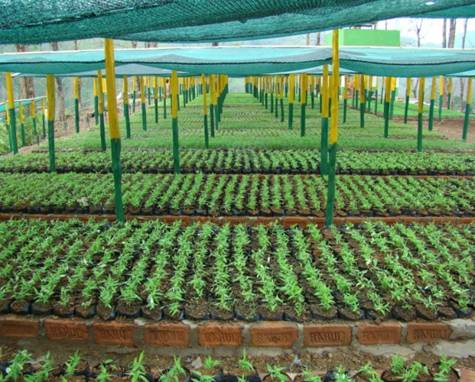
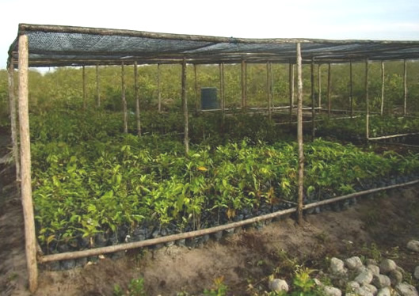
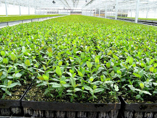
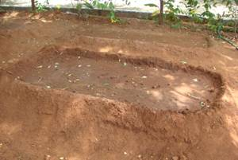
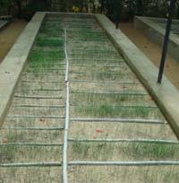
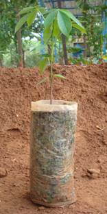
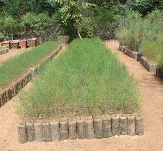
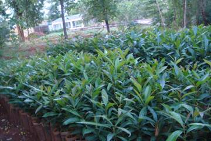

|  |  |  |
Forestry as a sector plays a vital role in the socio-economic and rural development of a country apart from its role in maintaining ecological stability particularly in a developing country like India. Forests are a traditional source of a multitude of products particularly with regard to fuelwood, fodder, small and constructional timber and have sustained large masses of population. The vast potential of forests to generate employment especially in rural areas, thereby contributing to rural incomes and poverty alleviation has remained unutilized.
The country's forests are under tremendous pressure due to the indiscriminate removal of timber, fuelwood, fodder and other forest produce.
Though there are various afforestation and plantation programmes being implemented by the State Forest Departments, Forest based industries, NGOs, etc., availability of quality planting material well in time and in close proximity to areas where afforestation is to be taken up remains a major constraint in taking up large scale afforestation of wastelands, private lands, etc.
The decentralised nurseries can be established by farmers, SHGs, State Forest Development Corporations, forest based industries, NGOs, etc.
The nurseries should plan to produce healthy plants covering timber, fuel, fodder, fruits, non-wood forest produce and even ornamental species having good demand in the locality. Besides this the prevailing agro-climatic conditions in the area should also be taken into consideration while selecting the species.
An area of 0.25 ha. has been considered for a viable nursery wherein 1.25 lakh seedlings can be raised. The size of the nursery may be increased according to the borrowers category, capacity and demand for planting material. The nursery should be on a gently sloping land to ensure proper drainage. Site preparation will be done by ploughing and hoeing the land. Initially the nursery will be raised in mother beds and will be pricked out in polypots. It should have water as a perennial source to ensure adequate supply in hot weather and to reduce costs. The shape will be rectangular and would measure 100m x 25 m.
|  |  |
Ten seed polybeds would be raised of 10m x 1m i.e. 10 sq m. The number of polybeds required at this stage is at 1:12 ratio i.e. 12 polybeds for each of the primary/seed polybeds. The 1.25 lakh seedlings will be raised in a total of 120 polybeds (1000 seedlings per polybed) of which 1.20 lakh seedlings would be raised in polybags and remaining 5000 will be naked rooted seedlings.
|  |  |  |
The seedlings will be hardened in the nursery by reducing the water supply over a period of time and exposing them to sunlight over different durations. This would make them capable of facing adverse weather conditions once they are transplanted onto the field. The nurseries are temporary in nature and are of five year duration. During the summer months, shading may be provided by using polythene sheets or shading nets. Bamboo mats can also be used for providing shade. Protection measures may be taken like fencing the area with barbed wire.
The total cost of raising a nursery with 1.25 lakh seedlings has been estimated at Rs.2.172 lakh for the first year. The capital cost works out to Rs.0.802 lakh to be incurred in the first year. The recurring cost works out to Rs.1.37 lakh. The detailed item wise and year wise unit cost is furnished below assuming a wage rate of Rs.50/- per manday.
1.25 lakh seedlings
Wage Rate: Rs.50/MD
| S.No. | Particulars of works | Unit | Cost. (Rs.) |
| Fixed Cost | |||
| 1 | Site Preparation | 8 MD | 400 |
| 2 | Fencing with barbed wire for 150 RMT | Rs.30/RMT | 4500 |
| 3 | Preparation of compost pit, nursery path | 10 MD | 500 |
| 4 | Maintenance of irrigation source | LS | 2000 |
| 5 | 5 HP Diesel Pumpset | LS | 25000 |
| 6 | Cost of pipeline for irrigation (100 mts.) | Rs.15/RMT | 1500 |
| 7 | Cost of implements for nursery operations | LS | 2500 |
| 8 | Cost of Water Tank | LS | 5000 |
| 9 | Preparation of Polybeds (120) | 100 MD | 5000 |
| 10 | Cost of Net for providing shade and installation | LS | 30000 |
| 11 | SubTotal | 76400 | |
| 12 | Contingency 5% | 3820 | |
| 13 | Total | 80220 | |
| Recurring Cost | |||
| S.No. | Particulars of works | Unit | Cost. (Rs.) |
| 1 | Rent for land 0.25 ha. | Rs.2500/yr | 2500 |
| 2 | Preparation of Seed beds (10) | 10MD | 500 |
| 3 | Cost of seeds | LS | 5000 |
| 4 | Cost of Polybags (400 Polybags/kg) | Rs.40/kg | 12000 |
| 5 | Cost of Pot mixture including loading, unloading @ 2 kg/bag | Rs.120/MT | 30000 |
| 6 | Cost of fertilizer @ 10 gm/polybag | Rs.10/kg | 12000 |
| 7 | Cost of chemicals for plant protection | LS | 2500 |
| 8 | Cost of diesel and lubricants for pumpsets @ 1.5 hrs for 100 days | 1 ltr. /hr @ Rs.22/ltr. | 3300 |
| 9 | Cost of thatching material | LS | 1000 |
| 10 | Cost of sowing on seed beds | 10 MD | 500 |
| 11 | Cost of weeding and hoeing | 50 MD | 2500 |
| 12 | Cost of picking up from germi beds | 50 MD | 2500 |
| 13 | Filling up of polybags @ 200 Polybags /MD | 625 MD | 31250 |
| 14 | Shifting of polybags | 50 MD | 2500 |
| 15 | Cost of labour for irrigation | 100 MD | 5000 |
| 16 | Cost of fertilizer application | 25 MD | 1250 |
| 17 | Cost of application of insecticides | 25 MD | 1250 |
| 18 | Maintenance of paths | 10 MD | 500 |
| 19 | Maintenance of pumpset | LS | 2500 |
| 20 | Watch and ward | Rs.1000/month | 12000 |
| 21 | Subtotal | 130550 | |
| Cost of supervision 5% | 6527 | ||
| 22 | Total | 137077 | |
| 23 | Grand Total | 217297 | |
Yield and Income
| Year | No. of Saplings | Saleable seedlings @ 90% | Actual Sale @ 90% | Income @ Rs.2.50 per sapling |
| 1 | 125000 | 112500 | 101250 | 253125 |
| 2 | 125000 | 112500 | 101250 | 253125 |
| 3 | 125000 | 112500 | 101250 | 253125 |
| 4 | 125000 | 112500 | 101250 | 253125 |
| 5 | 125000 | 112500 | 101250 | 253125 |
Economics of Forest Nursery on 0.25 ha.
| Years | 1 | 2 | 3 | 4 | 5 |
| Cost | 217297 | 137077 | 137077 | 137077 | 137077 |
| Benefits | 253125 | 253125 | 253125 | 253125 | 253125 |
| Net Benefit | 35828 | 116048 | 116048 | 116048 | 116048 |
Since the saplings would be ready for plantation anywhere from the 6th month to 12th month depending on the species, returns will be generated from the first year onwards. The returns have been calculated by taking 10% mortality and 90% of actual sale of the surviving saplings. The cost has been considered at Rs.2.50/- per sapling.
The beneficiaries may contribute towards down payment ranging from 5 to 25% depending upon their category, i.e., small and other farmers in accordance with NABARD's norms. Beneficiaries own labour can also be taken as his contribution towards the margin money requirement.
The loans extended by the banks to individual farmers and / or groups of individuals such as co-operatives under Wasteland development projects are eligible for refinance from NABARD to the extent of 100% of Bank loan.
The rate of interest on refinance from NABARD will be as per the circulars issued by NABARD from time to time. The rate of interest to be charged to the ultimate borrowers would be decided by the financing banks. However for working out the financial viability and bankability of the model project we have assumed the rate of interest as 12%.